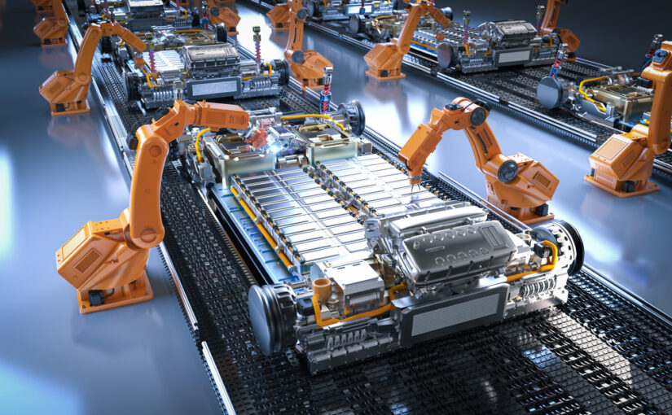
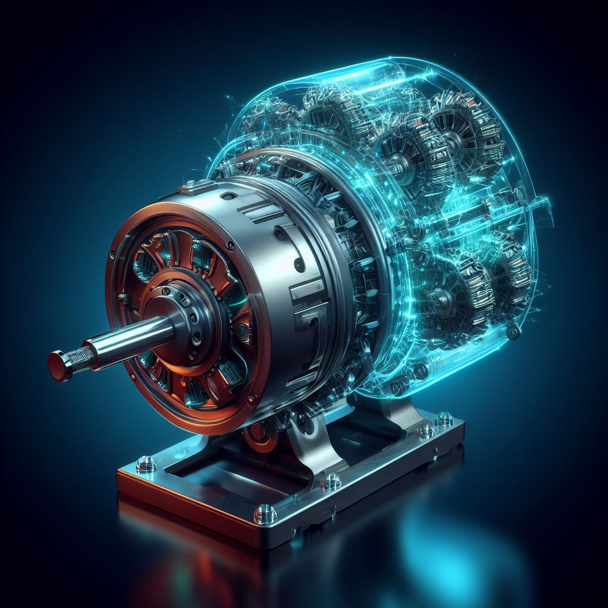
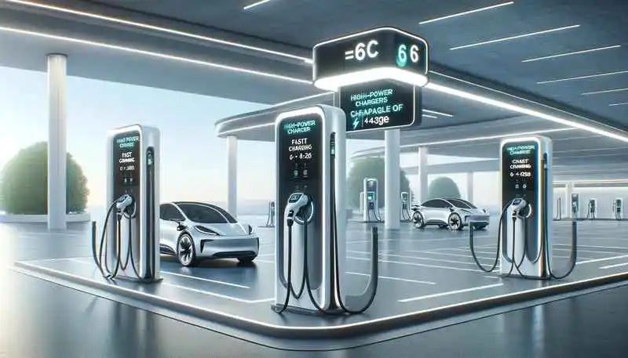
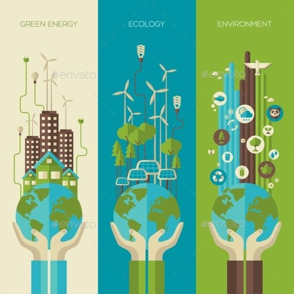
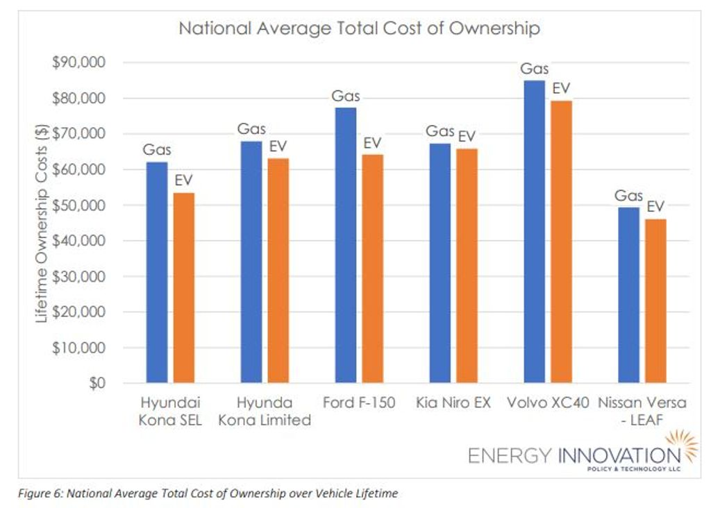
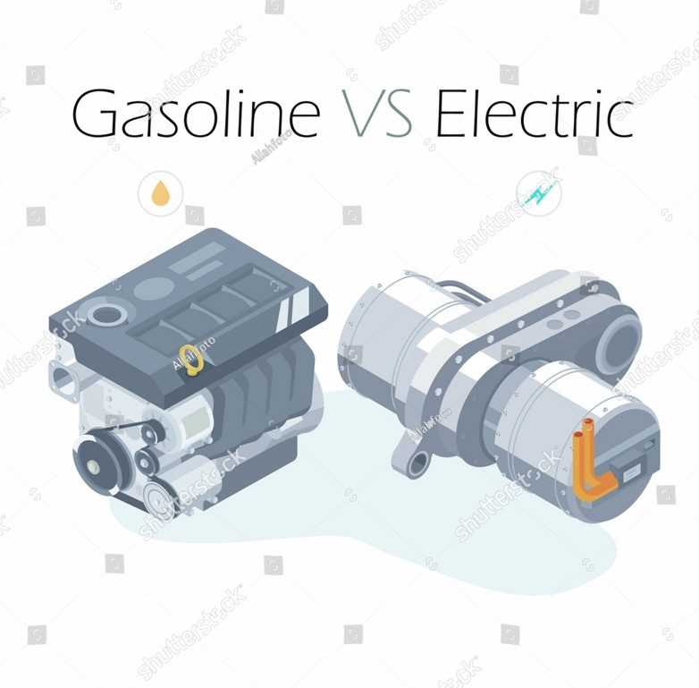
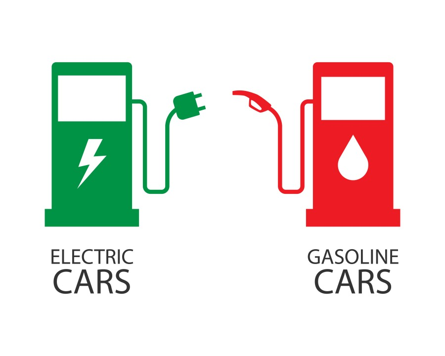

Explore the advancements in electric vehicle technology.
What are EVs and their Importance? Explore The Map Advancements Statistics EV vs Petroleum CarsElectric Vehicles (EVs) are vehicles that run on electricity instead of conventional fuel like petrol or diesel. EVs use electric motors and batteries, making them eco-friendly and more efficient than traditional internal combustion engine (ICE) vehicles. By relying on renewable electricity, EVs play a crucial role in reducing greenhouse gas emissions and combating climate change.
Most EVs use Lithium-Ion batteries, similar to the ones in smartphones, but on a much larger scale. These batteries can be recharged through home charging stations, public fast chargers, or specialised EV charging networks, making it easy to "refuel" an EV.
Electric Vehicles (EVs) are essential for building a sustainable future. They produce no tailpipe emissions, which significantly reduces air pollution in urban areas and helps address climate change by lowering greenhouse gases. EVs also decrease reliance on fossil fuels, making energy production and consumption cleaner and more efficient.
Most EVs are cheaper to run over time due to lower fuel and maintenance costs. As EV adoption grows, it supports job creation in green technology sectors, such as battery manufacturing, charging infrastructure, and renewable energy, further driving the transition to a sustainable economy and a sustainable environment.
Hover over a country to see EV statistics, as of 2024.
Advancements in battery technology have greatly improved EV range, efficiency, and lifespan. New Lithium-Ion and solid-state batteries offer faster charging times, higher energy density, and reduced degradation, helping drivers travel longer distances on a single charge. These innovations are making EVs a more viable choice for a wider range of users, enhancing both convenience and sustainability.
Modern electric motors in EVs are more powerful and efficient than ever before. Innovations in motor design and materials have led to motors with greater torque and faster acceleration while consuming less energy. This makes EVs more responsive, reliable, and energy-efficient, creating a smoother driving experience while also reducing overall energy consumption.
Charging infrastructure is expanding worldwide, with fast chargers that can power up an EV in minutes rather than hours. New charging networks are being installed at convenient locations like shopping centres, motorways, and public parking areas. With the development of ultra-fast chargers, EV owners can now enjoy quicker and easier access to charging wherever they go.
Global EV Sales Growth: The EV Sales by Year and Forecast Scenarios for the next 5 years
Indian EV Sales by State: The EV Sales by State and the EV Penetration by State in India
EVs vs Total Vehicle Sales by State: Along with some other data regarding Top State by EV sales and EV Penetration of 2,3,4 Wheelers and E-Buses
EV vs Gasoline Vehicles: Lifecycle Greenhouse Gas consumption (GHGs) for an EVs vs Combustion Engine Vehicles
EVs produce no tailpipe emissions, reducing air pollution and greenhouse gases. Diesel cars, on the other hand, emit CO2 and NOx, contributing to climate change and health issues.
While EVs can have a higher upfront cost, they generally cost less per mile due to lower electricity prices and minimal maintenance compared to diesel engines.
Electric motors deliver instant torque for smooth acceleration and energy efficiency, while diesel engines offer high torque at low speeds but are less energy-efficient.
Diesel cars rely on widespread petrol stations, whereas EVs require charging networks, which are growing rapidly with home and public charging options available.
